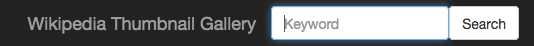
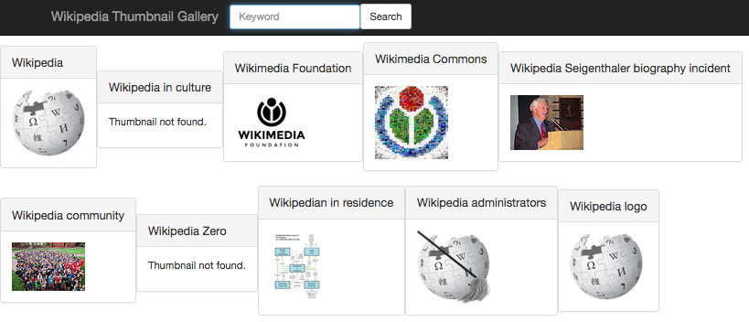
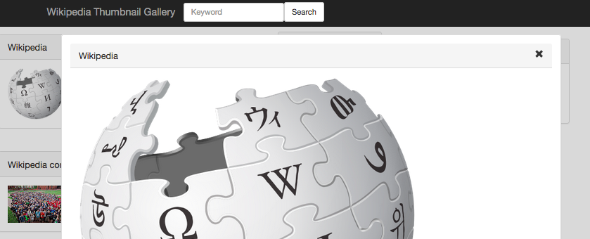
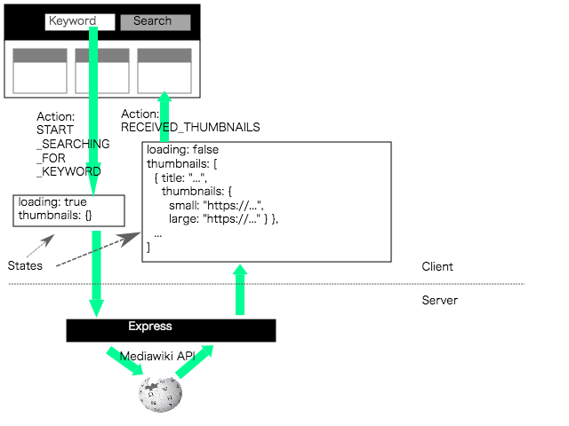

Posted on Aug 13
A simple app written as my own hands-on exercise to get a quick grasp of React, Redux and react-router following some tutorial sites:
The sources can be retrieved from here.
The app has a navbar on top with a text box. Wikipedia articles can be retrieved by typing in a keyword.

Upon completion of search, matching Wikipedia articles are listed in the center of the page. Some of the articles come with a corresponding thumbnail image.

By clicking one of the thumbnails, a larger thumbnail is displayed in a modal window. This window can be closed by clicking anywhere on the page.

/search with a keyword parameter to the history stack.Gallery component for rendering search results. Upon mounting of this component, it calls the server API asynchronously and dispatches the START_SEARCHING_FOR_KEYWORD action.RECEIVED_THUMBNAILS action upon a successful response from the server.
The server uses Express.
It has only one route /api/search which is defined as below.
// Excerpt from ./server/app.js
app.get('/api/search', (req, res) => {
wikipedia.fetchTitlesAndThumbnails(req.query.kw) // Defined in ./server/wikipedia.js
.then(result => {
res.json(result)
})
.catch(error => {
console.error(error.toString());
res.status(500).json({error: error.toString()});
});
});
The server uses two Mediawiki APIs; opensearch and query(pageimages).
The file ./server/wikipedia.js wraps calls to these external APIs.
The TopNavbar React component has the history prop passed by BrowserRouter.
In the submit event handler, the successive path /search is pushed to the history.
The home route / in this app navigates to the Home component that is just a placeholder containing only a link to an example thumbnail query.
The path /search navigates to the Gallery component for displaying a list of articles and thumbnails retrieved by the server.
<Switch location={isModal ? this.previousLocation : location}>
<Route exact path='/' component={Home}/>
<Route path='/search' component={Gallery} />
</Switch>
The implementation of modal window apparently mimics the "Modal Gallery" example of React Training / React Router.
Below is an excerpt from the client source.
The location.state object is defined when a smaller thumbnail is clicked.
If the isModal flag is set, the Switch route is rendered according to the previous location (this.previousLocation).
And the Modal component is placed on top of the previous rendering.
render() {
const { location } = this.props
const isModal = !!(
location.state &&
location.state.modal &&
this.previousLocation !== location // not initial render
)
return (
<div>
<Switch location={isModal ? this.previousLocation : location}>
<Route exact path='/' component={Home}/>
<Route path='/search' component={Gallery} />
</Switch>
{
isModal
? <Route path='/img' component={Modal} />
: null
}
</div>
)
}
The Gallery component calls its fetchThumbnails method when it is mounted or its props are to be updated.
class Gallery extends React.Component {
fetchThumbnails(params) {
const dispatch = this.props.dispatch;
const loading = this.props.loading;
const key = params.keyword;
console.log('fetchThumbnails', key);
if (loading) {
return null;
}
dispatch({type: 'START_SEARCHING_FOR_KEYWORD', keyword: key});
return axios.get('/api/search', {params: {kw: key}})
.then(response => {
let result = response.data;
console.log("fetchThumbnails result", result);
dispatch({
type: 'RECEIVED_THUMBNAILS',
keyword: key,
thumbnails: result
});
})
.catch(error => {
console.log("Error in fetchThumbnails", error);
dispatch({
type: 'ERROR_IN_API',
keyword: key,
error: error
});
});
}
componentDidMount() {
let query = queryString.parse(this.props.location.search);
this.fetchThumbnails(query);
}
...
}
This method invokes the server API. The API is called using axios.get.
It dispatches the following Redux actions during the asynchronous run.
Start of search:
{
type: 'START_SEARCHING_FOR_KEYWORD',
keyword: key /* keyword from user */
}
Completion of search:
{
type: 'RECEIVED_THUMBNAILS',
keyword: key, /* keyword from user */
thumbnails: result /* result of the API */
}
Error:
{
type: 'ERROR_IN_API',
keyword: key, /* keyword from user */
error: error /* the error caught during axios.get */
}
const INITIAL_STATE = {
loading: false,
keyword: '',
thumbnails: {},
error: false
}
export default (state = INITIAL_STATE, action) => {
switch (action.type) {
case 'START_SEARCHING_FOR_KEYWORD':
return {
loading: true,
keyword: action.keyword,
thumbnails: {},
error: false
}
case 'RECEIVED_THUMBNAILS':
return {
loading: false,
keyword: action.keyword,
thumbnails: action.thumbnails,
error: false
}
case 'ERROR_IN_API':
return {
loading: false,
keyword: action.keyword,
thumbnails: {},
error: action.error
}
default:
return state
}
}
The client is made with create-react-app so the Webpack Dev Server is used when testing on the development version of the app.
Getting this server to work with the Express API server requires additional configurations below.
This article helped me a lot:
The following command is designated in package.json as one of scripts to start the two servers concurrently.
"start": "concurrently \"node server\" \"react-scripts start\""
The actual command by yarn run start:
concurrently "node server" "react-scripts start"
The Webpack dev server call the Express API via the proxy defined in the package.json like below:
"proxy": {
"/api": {
"target": "http://localhost:7070"
}
},
If we are running the servers on a remote host (such as EC2 instance) instead of localhost, its host name must be specified to the HOST variable in the .env.development file:
HOST=ec2-xxx.compute.amazonaws.com
2015 My gh-pages